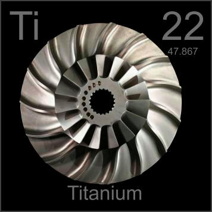

HOME
PREVIOUS
NEXT

Titanium
Atomic Weight: 47.867
Density: 4.507 g/cm3
Melting Point: 1668 °C
Boiling Point: 3287 °C
This titanium blisk (bladed impeller disk) is from the intake stage of a jet engine, where the light weight and high strength of titanium are key. Titanium is expensive because it must be cast under inert atmosphere.